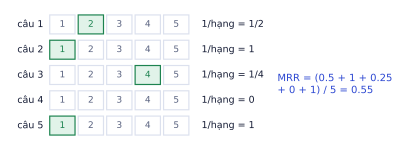
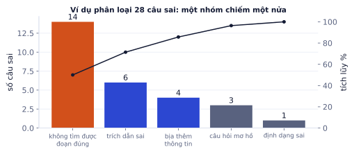
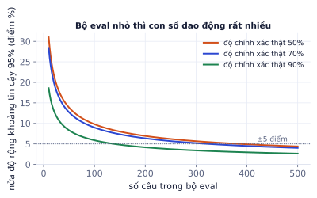
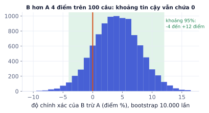

Bài 1
MRR
tính tayBốn câu hỏi, thứ hạng của đoạn đúng đầu tiên: 1, 3, không tìm thấy, 2.
Lời giải
(1 + 1/3 + 0 + 1/2) / 4 = 1.833/4 ≈ 0.458.
"Prompt mới có vẻ tốt hơn" không phải là kỹ thuật. Đánh giá (eval) biến cảm giác thành con số: bạn biết thay đổi nào thật sự cải thiện hệ thống, và biết khi nào một bản cập nhật làm hỏng thứ đang chạy tốt. Đây là kỹ năng phân biệt rõ nhất người làm demo với người làm sản phẩm, và là câu hỏi gần như chắc chắn gặp khi phỏng vấn ("bạn biết hệ thống của mình tốt bằng cách nào?").
Code thường đúng hay sai rõ ràng, có unit test. Đầu ra của LLM là văn bản tự do, thay đổi theo từng lần gọi, và một thay đổi nhỏ trong prompt có thể sửa 5 câu nhưng làm hỏng 8 câu khác mà bạn không thấy. Eval là "unit test" cho hành vi của hệ thống.
| Không có eval | Có eval |
|---|---|
| thử 3 câu, thấy ổn, đưa lên | chạy 150 câu, so với phiên bản cũ |
| người dùng báo lỗi mới biết | biết trước câu nào hỏng |
| tranh luận "prompt A hay B" | so điểm A và B trên cùng bộ câu |
| đổi model sang model rẻ hơn là đánh liều | biết chính xác mất bao nhiêu điểm |
Eval cho hệ thống LLM có ba tầng: offline (bộ câu có đáp án, chạy trước khi đưa lên), online (theo dõi người dùng thật: tỉ lệ thích/không thích, tỉ lệ hỏi lại, P8.3), và con người (định kỳ đọc mẫu ngẫu nhiên). Bài này tập trung vào tầng offline.
Mọi metric đều vô nghĩa nếu bộ câu hỏi không giống cách người dùng thật dùng hệ thống. Bộ eval vàng là tài sản quan trọng nhất của một dự án LLM, quan trọng hơn cả prompt.
Mọi thứ bắt đầu từ một bộ ví dụ có đáp án:
Mỗi ví dụ cho hệ RAG nên có:
{"id": "q017",
"question": "Mua online đổi được trong bao lâu, ai trả phí ship?",
"relevant_chunks": ["chinh-sach-doi-tra.pdf#p2-c3"],
"reference_answer": "Đổi trong 30 ngày kể từ khi nhận hàng. Tài liệu không nói ai trả phí vận chuyển khi đổi.",
"category": "nhiều ý + thiếu thông tin",
"must_refuse_part": true}
| Loại câu | Tỉ lệ gợi ý | Kiểm tra |
|---|---|---|
| Câu thường, có đáp án rõ | 50–60% | độ đúng |
| Cần ghép nhiều đoạn | 10–20% | retrieval nhiều đoạn |
| Không có đáp án trong tài liệu | 10–15% | từ chối đúng |
| Mơ hồ, sai chính tả, viết tắt | 10% | độ bền |
| Tấn công (prompt injection) | vài câu | an toàn (P4.8) |
Dùng bộ eval để tune rồi báo cáo trên chính nó. Sửa prompt cho tới khi đạt 95% trên 100 câu eval rồi báo "hệ thống đúng 95%" là lặp lại lỗi chọn siêu tham số trên tập test (P1.2). Giữ một phần (20–30%) làm tập kiểm tra cuối, chỉ chạy khi chốt phiên bản.
Như P4.2 đã nói, phần lớn lỗi RAG nằm ở bước tìm kiếm. Retrieval đo được mà không cần gọi LLM, nên rẻ và nhanh: thử 20 cấu hình chunking trong vài phút. Hãy tối ưu nó trước.
| Metric | Ý nghĩa | Khi nào dùng |
|---|---|---|
| Recall@k | tỉ lệ đoạn đúng nằm trong top-k | metric chính: đoạn đúng có được đưa cho LLM không |
| Precision@k | tỉ lệ đoạn trong top-k là đúng | đưa nhiều đoạn sai vào làm LLM dễ nhầm |
| MRR | trung bình 1/(thứ hạng của đoạn đúng đầu tiên) | khi chỉ cần một đoạn đúng, ở càng cao càng tốt |
| nDCG@k | tính mọi đoạn đúng, đúng ở hạng cao được thưởng nhiều hơn | khi có nhiều đoạn đúng với mức liên quan khác nhau |
MRR. Năm câu hỏi, đoạn đúng đầu tiên lần lượt ở hạng 2, 1, 4, không tìm thấy, 1:

MRR = (1/2 + 1 + 1/4 + 0 + 1)/5 = 0.55.
nDCG@5. Một câu có 2 đoạn đúng, tìm được ở hạng 1 và 3:
Đoạn đúng đã có trong context, nhưng LLM vẫn có thể hiểu sai, bịa thêm, trích dẫn nhầm, hoặc trả lời đúng mà quá dài. Cần đo câu trả lời theo nhiều khía cạnh, mỗi khía cạnh một metric.
| Khía cạnh | Câu hỏi | Cách đo |
|---|---|---|
| Correctness | đúng so với đáp án chuẩn không? | so khớp, F1 theo từ, hoặc LLM chấm |
| Faithfulness | mỗi ý có được tài liệu tìm được hỗ trợ không? | tách thành mệnh đề, kiểm tra từng mệnh đề |
| Citation accuracy | trích dẫn [n] có trỏ đúng đoạn chứa ý đó không? | kiểm tra từng trích dẫn |
| Refusal | câu không có thông tin thì có nói "không biết" không? | tỉ lệ từ chối đúng trên nhóm câu không có đáp án |
| Completeness | trả lời đủ mọi ý của câu hỏi chưa? | checklist ý trong đáp án chuẩn |
Với đáp án là số, tên, nhãn: so khớp chính xác sau khi chuẩn hóa (chữ thường, bỏ dấu câu). Với câu ngắn, dùng F1 theo từ:
Đáp án chuẩn "được đổi trả trong vòng 30 ngày" (7 từ), câu trả lời "đổi trả trong 30 ngày" (5 từ), trùng 5 từ.
F1 theo từ rẻ và khách quan, nhưng chấm sai khi câu trả lời đúng mà diễn đạt khác ("một tháng" thay vì "30 ngày"). Với câu trả lời dài, dùng LLM chấm.
Tách câu trả lời thành các mệnh đề đơn, rồi kiểm tra từng mệnh đề có được đoạn tài liệu hỗ trợ không:
Câu trả lời: "Bạn được đổi trong 30 ngày [1], shop chịu phí ship khi đổi [2]."
Mệnh đề 1: "được đổi trong 30 ngày" → đoạn [1] hỗ trợ ✓
Mệnh đề 2: "shop chịu phí ship khi đổi" → không đoạn nào nói vậy ✗ (bịa)
Faithfulness = 1/2
Một câu trả lời có thể đúng (khớp thực tế) nhưng không faithful (model lấy từ kiến thức riêng, không từ tài liệu): trong RAG, đó vẫn là lỗi, vì người dùng không kiểm tra được.
Chấm tay 200 câu trả lời mỗi lần đổi prompt là không thể. Một LLM chấm theo tiêu chí rõ ràng làm việc đó trong vài phút. Nhưng judge cũng là một LLM: nó có thiên lệch, và phải được kiểm tra như mọi thành phần khác.
Bạn chấm câu trả lời của trợ lý chăm sóc khách hàng, dựa trên tài liệu tham chiếu.
<tài_liệu>{các đoạn đã tìm được}</tài_liệu>
<câu_hỏi>{câu hỏi}</câu_hỏi>
<đáp_án_chuẩn>{đáp án chuẩn}</đáp_án_chuẩn>
<câu_trả_lời>{câu trả lời cần chấm}</câu_trả_lời>
Chấm theo thang:
3 = đúng và đủ mọi ý của đáp án chuẩn, không thêm thông tin ngoài tài liệu
2 = đúng nhưng thiếu ý phụ, hoặc thêm chi tiết thừa vô hại
1 = có ý sai, hoặc thiếu ý chính
0 = sai hoàn toàn, bịa thông tin, hoặc không trả lời
Viết lý do ngắn trong <lý_do>, rồi điểm trong <điểm>.
Yêu cầu lý do trước điểm để judge "nghĩ" trước khi chấm, và để bạn đọc được vì sao nó chấm như vậy.
| Thiên lệch | Cách giảm |
|---|---|
| Thích câu trả lời dài | tiêu chí rõ, phạt thông tin thừa |
| Thích đáp án ở vị trí đầu (khi so sánh A/B) | chấm cả hai thứ tự, lấy trung bình |
| Thích văn phong của chính nó | dùng model chấm khác model sinh |
| Chấm mơ hồ, điểm dồn về giữa | thang điểm ngắn (0–3) có mô tả từng mức |
| Bị câu trả lời "thuyết phục" | đưa đáp án chuẩn và tài liệu cho judge |
Luôn kiểm tra judge bằng người: gán nhãn tay 20–50 mẫu, đo mức đồng ý giữa judge và người. Tỉ lệ đồng ý thô có thể đánh lừa khi nhãn mất cân bằng, nên dùng thêm Cohen's kappa (đồng ý đã trừ phần đồng ý do may mắn):
κ = (p_o − p_e) / (1 − p_e)
p_o: tỉ lệ đồng ý quan sát; p_e: tỉ lệ đồng ý kỳ vọng nếu hai bên chấm ngẫu nhiên theo tỉ lệ của riêng mình
40 câu, judge và người cùng chấm đạt/không đạt:
| người: đạt | người: không đạt | |
|---|---|---|
| judge: đạt | 20 | 4 |
| judge: không đạt | 3 | 13 |
Đồng ý 82.5% nghe cao, nhưng κ = 0.64 chỉ ở mức "khá". Đọc 7 câu bất đồng để sửa prompt chấm.
Quy tắc thực hành: tỉ lệ đồng ý dưới khoảng 80% (hoặc κ dưới 0.6) thì sửa prompt chấm trước khi tin nó.
Con số tổng chỉ nói "tệ bao nhiêu", không nói "tệ ở đâu" hay "sửa gì". Phân tích lỗi biến 28 câu sai thành một danh sách việc cần làm có thứ tự ưu tiên.
Sau mỗi lần chạy eval:

Các nhóm lỗi thường gợi ý cách sửa:
| Nhóm lỗi | Thường sửa bằng |
|---|---|
| Không tìm được đoạn đúng | chunking, hybrid, reranker, viết lại truy vấn (P4.5) |
| Tìm được nhưng hiểu sai | đưa ít đoạn hơn, sắp đoạn đúng lên đầu, model mạnh hơn |
| Bịa | nhấn mạnh "chỉ dùng tài liệu", yêu cầu trích dẫn từng ý |
| Không từ chối khi nên từ chối | ví dụ few-shot về từ chối |
| Định dạng sai | structured output (P4.1) |
Prompt B đạt 76%, prompt A đạt 72% trên 100 câu. B tốt hơn thật, hay chỉ may mắn trên đúng 100 câu này? Trả lời sai câu hỏi này là cách nhanh nhất để đưa một thay đổi vô ích (hoặc có hại) lên production.
Với độ chính xác p đo trên n câu, khoảng tin cậy 95% xấp xỉ:
p ± 1.96 · √( p(1 − p) / n )
p = 0.7 trên n = 100 câu: nửa độ rộng = 1.96 × √(0.21/100) ≈ 0.09. Độ chính xác thật nằm khoảng 61% đến 79%. Muốn sai số ±5 điểm cần khoảng 320 câu.

Khi so hai phiên bản, chạy cùng bộ câu và so từng câu (so có cặp), không chỉ so hai con số tổng. Chỉ những câu mà hai phiên bản cho kết quả khác nhau mới mang thông tin.
100 câu: 66 câu cả hai đúng, 18 câu cả hai sai, 10 câu chỉ B đúng, 6 câu chỉ A đúng. A = 72%, B = 76%.

Kết luận đúng ở ví dụ trên: "B có vẻ tốt hơn khoảng 4 điểm nhưng chưa chắc; cần thêm câu eval, hoặc đọc 16 câu khác nhau để xem B thắng ở loại câu nào."
Ghi nhớ: không có bộ eval thì không có cải tiến, chỉ có thay đổi.
Bộ eval 64 câu, độ chính xác đo được 0.75.
| Tầng | Đo gì | Công cụ |
|---|---|---|
| Retrieval | đoạn đúng có trong top-k không | recall@k, MRR, nDCG |
| Câu trả lời | đúng, bám nguồn, trích dẫn đúng, từ chối đúng | so khớp, F1, LLM-as-judge |
| Judge | judge có chấm giống người không | tỉ lệ đồng ý, Cohen's kappa |
| So sánh | thay đổi có thật sự tốt hơn không | so có cặp, McNemar, bootstrap |
| Quy trình | không làm hỏng thứ đang chạy | regression trong CI, tracing |
| Thuật ngữ | Nghĩa |
|---|---|
| eval / evaluation set | bộ ví dụ có đáp án để đánh giá |
| golden set | bộ eval vàng, chất lượng cao, ổn định |
| recall@k / precision@k | độ phủ / độ chính xác trong top-k |
| MRR | trung bình nghịch đảo hạng của kết quả đúng đầu tiên |
| nDCG | điểm xếp hạng có chiết khấu theo vị trí |
| faithfulness / groundedness | câu trả lời bám vào tài liệu |
| LLM-as-judge | dùng LLM chấm đầu ra |
| rubric | thang điểm có mô tả từng mức |
| Cohen's kappa | mức đồng ý đã trừ phần do may mắn |
| error analysis | phân loại và đếm lỗi để ưu tiên sửa |
| confidence interval | khoảng tin cậy của một con số đo |
| paired comparison / McNemar | so từng câu giữa hai phiên bản |
| bootstrap | lấy mẫu lại có hoàn lại để ước lượng độ dao động |
| regression test | kiểm tra thay đổi không làm hỏng thứ cũ |
| tracing | ghi lại toàn bộ chuỗi xử lý của một yêu cầu |
Bốn câu hỏi, thứ hạng của đoạn đúng đầu tiên: 1, 3, không tìm thấy, 2.
(1 + 1/3 + 0 + 1/2) / 4 = 1.833/4 ≈ 0.458.
2/5 = 0.4. 6/8 = 0.75: hai mệnh đề không có nguồn là dấu hiệu bịa. 17/20 = 0.85, mức chấp nhận được để bắt đầu dùng judge, nhưng xem kỹ 3 ca bất đồng.
Hệ thống đúng 80% trên 50 câu. Khoảng tin cậy 95% xấp xỉ p ± 1.96·√(p(1−p)/n).
Với 50 câu, 80% thật ra là "khoảng 69% đến 91%". Một bản cập nhật tăng từ 80% lên 84% trên 50 câu chưa chứng minh được gì. Muốn sai số ±5% cần khoảng 246 câu. So sánh hai phiên bản trên cùng bộ câu (paired) giảm nhiễu hơn nhiều so với so hai con số độc lập.
Viết prompt LLM-as-judge chấm câu trả lời của hệ RAG theo thang 1–3 cho tiêu chí "đúng và bám nguồn". Prompt phải nhận câu hỏi, các đoạn nguồn, đáp án chuẩn, câu trả lời; mô tả từng mức điểm; yêu cầu lý do trước điểm; trả JSON.
Bạn chấm câu trả lời của một hệ thống hỏi đáp tài liệu.
<question>{q}</question>
<sources>{docs}</sources>
<reference>{gold}</reference>
<answer>{answer}</answer>
Thang điểm:
3 = đúng với đáp án chuẩn, mọi ý đều có trong nguồn, không thêm thông tin ngoài nguồn.
2 = đúng ý chính nhưng thiếu chi tiết quan trọng, hoặc có ý phụ không có trong nguồn.
1 = sai, mâu thuẫn với nguồn, hoặc bịa thông tin. Nếu đáp án chuẩn là "không có thông tin" mà câu trả lời vẫn trả lời, cho 1.
Viết lý do ngắn trước, rồi cho điểm. Chỉ trả JSON:
{"reason": "...", "score": 1|2|3}
Viết hàm chạy eval cho hệ RAG ở Lab 5: với mỗi mẫu trong file JSONL, đo recall@5, gọi judge, lưu kết quả từng mẫu ra file và in bảng tổng hợp.
import json, statistics, time
def run_eval(path, search, answer, judge, k=5, out="eval_results.jsonl"):
rows = [json.loads(l) for l in open(path, encoding="utf-8")]
results = []
for r in rows:
t0 = time.time()
hits = search(r["question"], k)
ans, _ = answer(r["question"])
verdict = judge(r["question"], ans, r["reference"]) # {"reason", "score"}
results.append({**r, "recall": len(set(hits) & set(r["gold_ids"])) / max(1, len(r["gold_ids"])),
"answer": ans, **verdict, "latency": time.time() - t0})
with open(out, "w", encoding="utf-8") as f:
for x in results:
f.write(json.dumps(x, ensure_ascii=False) + "\n")
print(f"recall@{k} {statistics.mean(x['recall'] for x in results):.3f} | "
f"điểm TB {statistics.mean(x['score'] for x in results):.2f} | "
f"tỉ lệ điểm 3 {sum(x['score'] == 3 for x in results) / len(results):.0%}")
return results
(chạy xong, không in ra gì)
Các bước
Xong khi